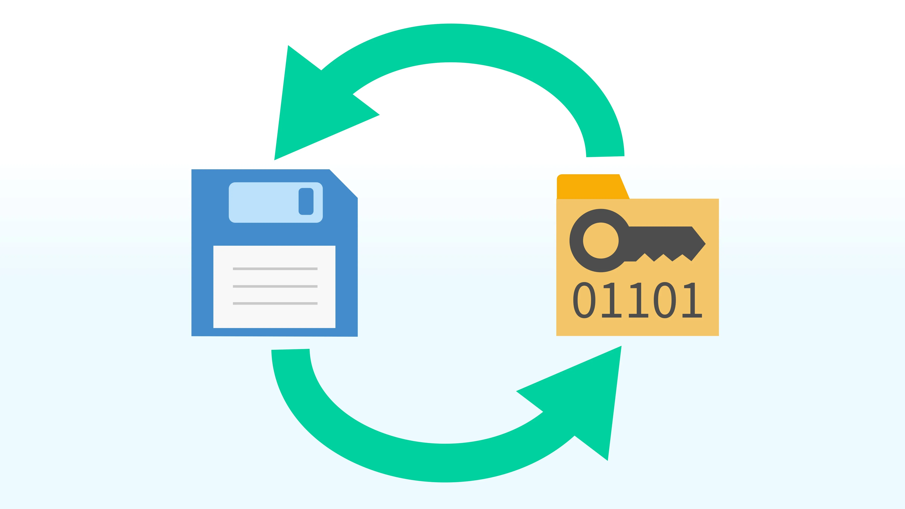

ptrace scopeAdvanced DocumentationDebian PackagesPrevious page: ptrace scopeIndex page: Advanced DocumentationNext page: Debian Packagesswap-file-creator

Creates a swap file on LUKS-encrypted systems. Useful for systems with low RAM, such as virtual machines.
Introduction
swap-file-creator adds a swap file on a LUKS-encrypted
disk to the system. On every boot, it creates a new swapfile if the disk
is LUKS-encrypted.
No swapfile will be created by default on unencrypted disks.
Optional: Create a swap file on an unencrypted disk.
This is useful for systems with low RAM such as those inside virtual machines. It prevents common cases of freezing of VMs with low RAM during upgrades. [1]
It has an ENOUGH_RAM setting which defaults to
1950 MB. If there is more than enough RAM, it will not
advise to increase RAM. (This setting only controls whether a low-RAM
warning is shown; it does not disable swap creation.)
An optional option exists to shred the swapfile on shutdown but this is slow. [2]
Earlier versions created an encrypted swap file with an ephemeral key using dm-crypt. Due to a Linux kernel bug, this is no longer supported in Debian trixie and later; current versions instead create a regular swap file on top of LUKS full-disk encryption.
https://lore.kernel.org/lkml/20251111231835.1232ad8f@kf-m2g5/T/#u
For further information, see:
 Kicksecure/swap-file-creator
Kicksecure/swap-file-creator
Installation
Platform dependent.
- Kicksecure: Available. Installed by default. Otherwise, see footnote. [3]
- Kicksecure-Qubes: Unsupported. Setting up swap and/or encryption of any kind is completely up to Qubes. Unspecific to Kicksecure. Opt-in available.
Configuration
The config file is located at /etc/default/swap-file-creator.
Here you can change various parameters for the swapfile creation such as
the path for where to create the swapfile at startup.
This might be useful in case you have a copy-on-write system like ZFS or BtrFS.
Open file /etc/default/swap-file-creator in an editor
with administrative ("root") rights.
1 Select your platform.

2 Notes.
- Sudoedit guidance: See Open File
with Root Rights for details on why using
sudoeditimproves security and how to use it. - Editor requirement: Close Featherpad (or the chosen text
editor) before running the
sudoeditcommand.
3 Open the file with root rights.
sudoedit /etc/default/swap-file-creator

2 Notes.
- Sudoedit guidance: See Open File
with Root Rights for details on why using
sudoeditimproves security and how to use it. - Editor requirement: Close Featherpad (or the chosen text
editor) before running the
sudoeditcommand. - Template requirement: When using Kicksecure-Qubes, this must be done inside the Template.
3 Open the file with root rights.
sudoedit /etc/default/swap-file-creator
4 Notes.
- Shut down Template: After applying this change, shut down the Template.
- Restart App Qubes: All App Qubes based on the Template need to be restarted if they were already running.
- Qubes persistence: See also Qubes Persistence
- General procedure: This is a general procedure required for Qubes and is unspecific to Kicksecure-Qubes.

2 Notes.
- Example only: This is just an example. Other tools could achieve the same goal.
- Troubleshooting and alternatives: If this example does not work for you, or if you are not using Kicksecure, please refer to Open File with Root Rights.
3 Open the file with root rights.
sudoedit /etc/default/swap-file-creator
For example, to set a custom swap file size of 1024 MB, add.
SWAP_FILE_SIZE_CUSTOM_MB=1024
Save.
Done. Settings will be applied after reboot (or when swap-file-creator is restarted).
Other configuration options include (see
/etc/default/swap-file-creator for the full list):
- SWAPFILE=/var/swapfile
- Path where the swap file is created.
- ENOUGH_RAM=1950
- RAM threshold in MB after which no low-RAM advice is shown. Does not disable swap-file-creator.
- DO_PRE_CHECK=yes
-
When
yes(default), swap-file-creator only creates a swap file if the target path is on a LUKS-encrypted device. Set tonoto allow creating a swap file on unencrypted disks (not recommended for privacy).
- SHRED_ON_STOP=no
-
When set to
yes, the swap file is shredded before deletion when stopping the service.
- SWAPON_EXTRA=
-
Extra options passed to
swapon.
- MKSWAP_EXTRA=
-
Extra options passed to
mkswap.
Check Swap File Size
sudo du -sh /var/swapfile
Functionality Test
To check it is working correctly, check the amount of free and used memory in the system.
free -m
Next, display the swap usage summary.
sudo swapon -s
For troubleshooting purposes, Check Daemon Log and search for unit-name:
swap-file-creator.
Live Mode
swap-file-creator does not run if live mode is detected. [4]
Debugging
Only required in case of issues. Otherwise the user can skip this wiki chapter.
Error States
In case swap-file-creator is failing at boot time, it does not break the boot process.
For example, host kernel versions other than the one recommended on the recommended VirtualBox version wiki page are likely to break VirtualBox VMs in many ways if these are unsupported by VirtualBox. [5] In this case, swap-file-creator might be broken and this being the only visible error, but this still does not break the boot process. However, when using kernel versions unsupported by VirtualBox, many other things will be broken and the system will be unbootable anyhow.
{kind=link}
Manual Swap File Creation
TODO: document
Disable
sudo systemctl stop swap-file-creator
sudo systemctl disable swap-file-creator
sudo rm -f /var/swapfile
Development
- main source code file:
 Kicksecure/swap-file-creator
Kicksecure/swap-file-creator - systemd unit file:
Kicksecure/swap-file-creator
- Kicksecure/swap-file-creator
See Also
Footnotes
- Such as during Linux kernel module building (VirtualBox guest additions) as well as kernel header package upgrades. * https://forums.whonix.org/t/swap-swap-file-whonix-gateway-freezing-during-apt-get-dist-upgrade-encrypted-swap-file-creator/8317 * https://forums.whonix.org/t/whonix-xfce-for-virtualbox-users-ram-increase-required/8993 * https://forums.whonix.org/t/default-ram-setting/12312
- Kicksecure/swap-file-creator
Install package(s)
swap-file-creatorfollowing these instructions: 1 Platform specific notice. * Kicksecure: No special notice. * Kicksecure-Qubes: In Template. 2 Update the package lists and upgrade the system. sudo apt update && sudo apt full-upgrade 3 Install theswap-file-creatorpackage(s). Usingaptcommand line--no-install-recommendsoption is in most cases optional. sudo apt install --no-install-recommends swap-file-creator 4 Platform specific notice. * Kicksecure: No special notice. * Kicksecure-Qubes: Shut down Template and restart App Qubes based on it as per Qubes Template Modification. 5 Done. The procedure of installing package(s)swap-file-creatoris complete.- Live mode is detected via the
helper-scriptslive mode detection mechanism/usr/libexec/helper-scripts/live-mode.sh, which sets alive_status_detectedflag used by swap-file-creator. - https://www.virtualbox.org/ticket/17055#comment:3